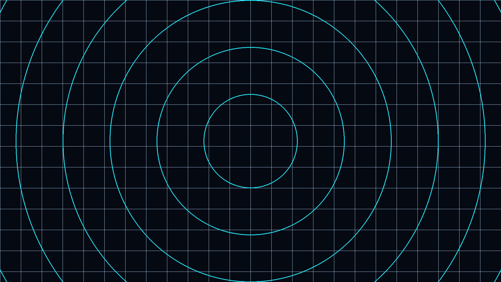
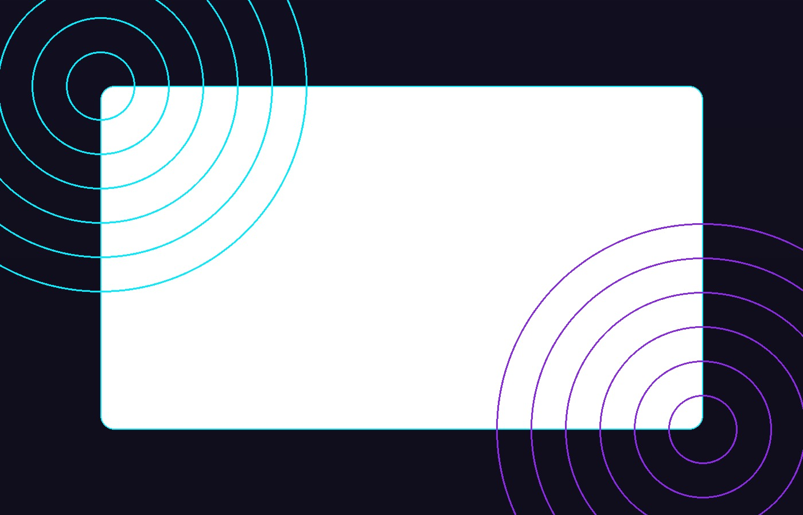

Una PWA de tecnología, Instálala, úsala offline y mantente al día.

Tecnología: IA, Cloud, Web y más.
Inteligencia Artificial
Modelos generativos, visión, NLP y MLOps.
IAGenAIMLOps
Whitepaper
Computación en la Nube
Arquitecturas serverless, contenedores y FinOps.
CloudServerless
Guía
Desarrollo Web
PWAs, Web Components y performance.
PWAWCs
Receta PWA
Seguridad
Zero-Trust, autenticación moderna y cifrado.
SecZero-Trust
Checklist
Aprende PWA Offline
Conceptos clave de caché, SW y manifest.
Abrir PDF
Web Components – Guía
Custom elements, Shadow DOM y slots.
Abrir PDF
Checklist de Performance
Medición, Core Web Vitals y optimizaciones.
Abrir PDF
Preguntas frecuentes
Usa el botón Instalar App del encabezado (aparece cuando el navegador lo permite).
Sí. El Service Worker guarda en caché el App Shell y recursos clave.
Si los abriste al menos una vez online o los precacheaste en el SW, sí.
